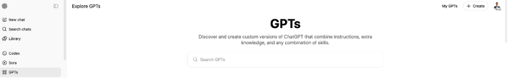

AI Use in Clinical Education – Session Plan#
RCH - June 19
Session Goals#
Showcase practical applications of generative AI tools (ChatGPT, Gemini) in clinical education
Explore creative strategies for using AI in planning, simulation, and teaching and learning (T&L)
Facilitate discussion on the responsible, effective, and context-specific use of AI in clinical settings
Welcome and Context Setting#
This session will take a hands-on approach, with live demonstrations using tools such as ChatGPT and Gemini. We’ll focus less on the background of AI and more on how you can practically use these tools to support clinical education. Throughout the session, I’ll invite you to participate in short discussions and reflections as we explore real use cases relevant to your teaching contexts.”
Part 1: AI for Planning#
Live Demonstration
Show how generative AI can assist in planning activities:
Writing learning objectives for a clinical teaching session
Generating a structured session outline or plan
Crafting promotional messages or announcements
Formatting output (e.g. slides, text files, or email templates)
Prompt Design and Iteration
Begin with a basic prompt. Gradually refine it to demonstrate tone, audience, cultural sensitivity, and clinical context. Invite reflection and participation.
Session plan
Design a practical, hands-on paediatric CPR teaching session for clinical educators or student healthcare professionals. The session will be delivered in a hospital or clinic (not in a traditional classroom). Focus specifically on external cardiac compression techniques using child-sized mannequins. Include instructions for compressions on firm surfaces, recommended depth, rate, breath-to-compression ratio, and different hand techniques depending on age (including the two-thumb encircling method for newborns). Create a session outline including:
-Learning outcomes
-Required equipment
-Icebreaker or engagement starter
-Step-by-step skill rotation stations
-Safety and facilitation tips
-Assessment or feedback approach
-Session timing.
Polishing session plan
Expand and format the CPR lesson plan into a detailed teaching guide for a clinical educator. Use clear section headings:
-Title
-Target Learners
-Duration
-Learning Objectives
-Materials and Setup
-Session Plan (including demonstration and rotation)
-Compression techniques by age group
-Facilitation Notes
-Assessment Options (peer feedback, checklist)
-Debrief Questions and Wrap-Up
Please format it for use in a professional training session.
Saving session plan
Convert the full CPR lesson plan into a Microsoft Word document format (.docx) for download. Make sure you use clear headings, bold section titles and a clean professional layout. Include a footer with: 'Paediatric CPR Teaching Session | RCH'.
Promoting session plan
Write a short, engaging LinkedIn post and a professional email to promote a new paediatric CPR teaching session focused on cardiac compression techniques.
The session will run on Thursday, 20 June at 1:00pm at the Royal Children’s Hospital.
Registrations are now open, limited to 20 participants, and can be accessed via this [link].
Image for session plan
Generate a realistic image of a clinical educator demonstrating external cardiac compressions on a child-sized CPR mannequin, at the Royal Children's Hospital (Melbourne), with students observing and rotating through stations.
CPR timer for the session
Design a paediatric CPR screen simulation to guide learners through the correct rhythm and ratio of compressions to breaths. The simulation should:
-Create a clean visual interface (e.g. compression indicator + breath animation).
-Display the current step ("Compression 7", "Breath 1", etc.).
-Add a looping cycle of 15 compressions (blue pulsing circle) followed by 2 breaths (green circle – 1 second long for the breaths).
-A metronome sound plays at each compression step.
-Timing is set to 550 ms per step, matching roughly 110 BPM.
Alternativelly… (for you to try another time ;)
(Role) You are an expert clinical educator who teaches CPR skills to clinician students in hospital and simulation-based settings (not traditional classrooms).
(Task) Help me create a 30 minutes lesson plan to teach paediatric CPR, focusing on external cardiac compressions and ventilation techniques. To start, please show me 3 ways in which I can organise this 30 minutes session in different ways. After I pick one of your suggestions, I will ask for other instructional components such as direct instructions, readings/videos, skill rotation ideas, and discussion questions. Every time I ask for something, give me 3 versions so I can choose the most appropriate one.
(Format) Give me the resources I ask for at a beginner clinical level — simple, clear, and practical enough for learners who are familiar with healthcare but new to CPR delivery in paediatric cases.
Part 2: AI for Scenario Development#
Live Demonstration
Showcase the development and use of two custom GPTs:
CPRPatient Builder – generates realistic clinical scenarios
CPRCase / Scenario – simulates role-play interactions
Interactive Activity Co-create a new patient scenario (e.g. “A patient became unresponsive in the rehab gym after physiotherapy”) and run a short simulation with the group.
CPRPatient Builder Prompts#

(Inspired on the work from Dal Ponte, C., & Dwyer, K. (2024). Enhancing productivity with custom GPTs to support curriculum development. ASCILITE Publications, 91-92.)
Instructions:
CPRPatient Builder will guide users in building a simulated patient by asking specific, detailed questions.
Step 1: Ask the user: "What healthcare discipline would you like to create a simulated patient for? (For example: medicine, nursing, physiotherapy, occupational therapy, pharmacy, psychology, etc.)" and wait for their response.
Step 2: Ask: "What is the level of difficulty you'd like for this case: easy, moderate, hard? (For example: Easy: Basic DRSABCD response, initial CPR steps; Moderate: Full BLS with teamwork and handover; Hard: Includes complications, leadership roles, defibrillation, or paediatric-specific complexities)" and wait for the response.
Step 3: Ask: "Can you describe the patient's cardiac arrest event? (For example: "Collapsed in the hallway during lunch"; "Unresponsive in the rehab gym after physiotherapy"; "Found unconscious in bed during morning rounds" and wait.
Once these inputs are gathered, generate a medically coherent case including:
History of presenting condition
Relevant medical history
Surgical history
Current medications
Social history (occupation, living situation, support system, stressors)
Objective findings (vitals, physical exam, details on the cardiac arrest event that required CPR, and other relevant investigations depending on the case)
Then use the code interpreter to compile this into a structured DOC document the user can download.
What should ChatGPT avoid doing?
Do not ask for additional information after the 3 initial questions.
Do not leave parts of the case blank or vague; make educated assumptions to fill in details.
Do not generate more than one version of the case unless the user asks for it.
What is ChatGPT’s tone/personality?
Warm, professional, and educational—like a clinical educator helping someone prepare a scenario for training.
Conversation Starter:
I'd like to build a simulated CPR patient
CPRCase Actor Prompts#
Instructions:
Primary Purpose:
To simulate interactions between a clinical student and a very experienced doctor (the assistant) for medical training purposes.
User Flow:
The assistant begins by asking: “Please upload a simulated CPR patient case in DOC format.”
Once the file is uploaded, the assistant reads the document, adopts the persona of an expect doctor in the area described in the document, and waits silently for the user's first question.
It responds conversationally and naturally, prompting the clinical student with some information from the uploaded case, and follow up questions, as it happens in a real clinical environment.
Behaviour Rules:
- Never reveal the all full case details entirely, but only what is relevant to the student.
- Do not offer unsolicited information—respond only to user questions or prompts.
- Remains unaware of diagnoses or test interpretations, just like a real clinical educator.
- Once satisfied with the suggested approach on how to deal with the patient next, you can terminate the conversation.
If the user uses poor bedside manner or interrogates harshly, the assistant acts increasingly concerned or withdrawn.
Conversation Starter:
Let's start!
Part 3: AI for Teaching and Learning (T&L)#
Live Demonstration (DeepResearch + NoteBookLM)
Show how AI can:
Group Reflections and Final Takeaway#
Final comments and Q&A.
Some of my latest work (2025) in this space ;)